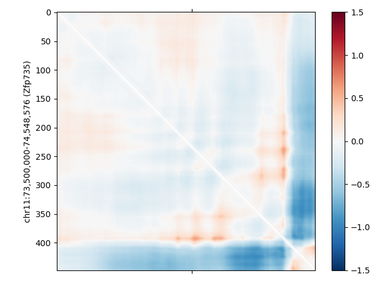
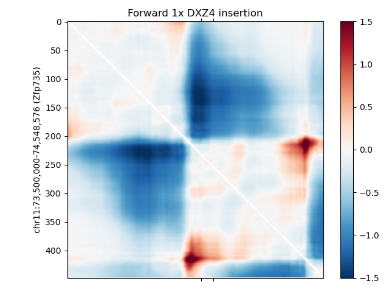
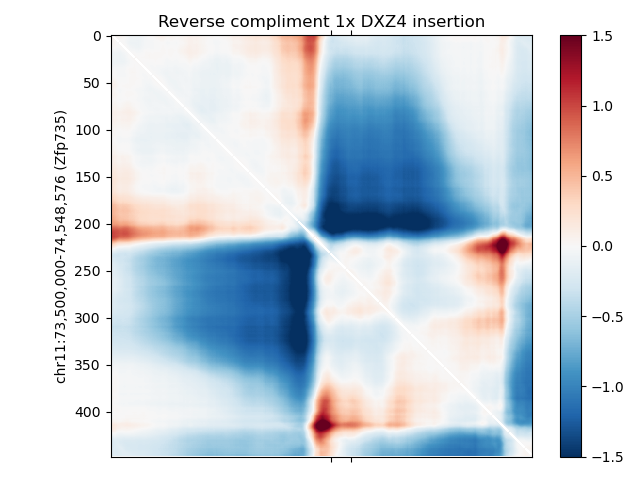

Inserting the whole ~40kb DXZ4 locus in a new location in mouse
Only showing the effect of a single-copy insertion because the locus is so large and the effect is so drastic
Unchanged
Forward Insertion
Reverse Insertion


